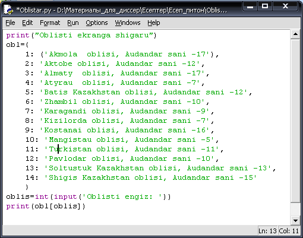
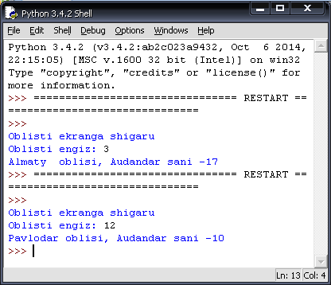
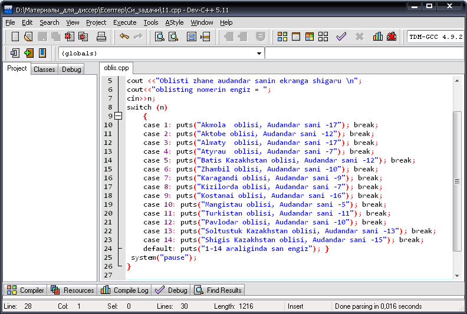
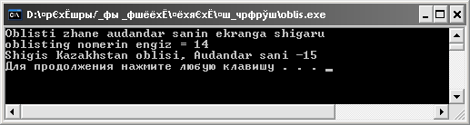
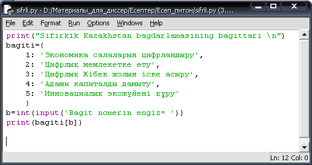
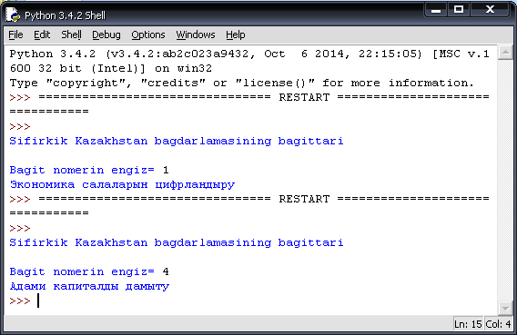
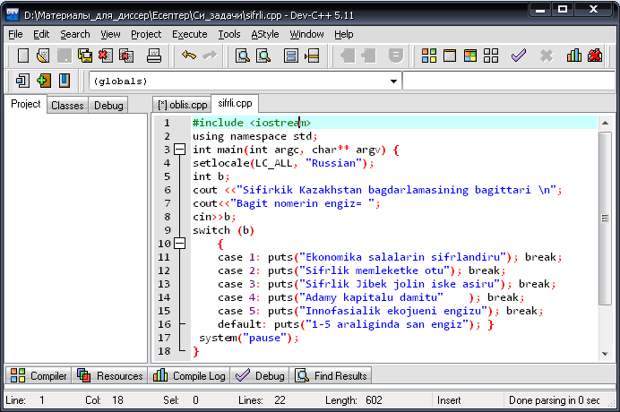
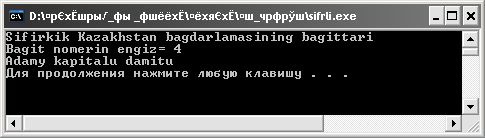
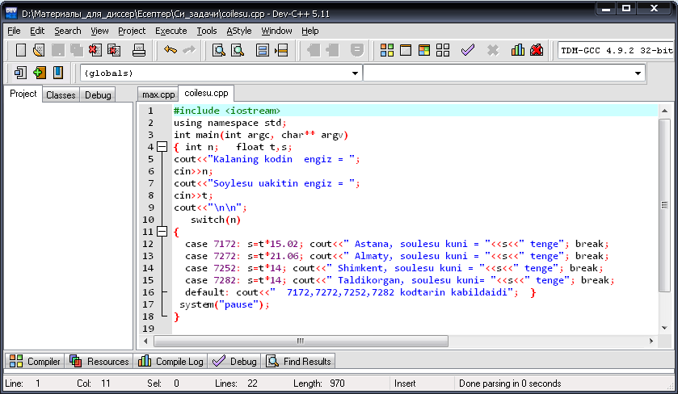
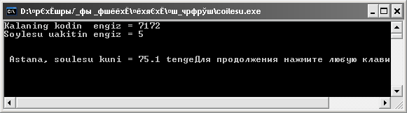

Таңдау операторы
Қазақстанның
облыстарын және сол облыстың аудандарының санын экранға шығаратын программа
құрайық. Берілген бірнеше шарттың ішінен мүмкін болатын бір нұсқаны таңдау үшін
таңдау операторы пайдаланылады.
Python программалау тілінде
берілген программа коды 1, 2–суреттерде көрсетілген.
|

Сурет 1 - ҚР-ның облыстарын және облыс аудандарының санын экранға шығару

Сурет 2 - Алынған нәтиже
Осы
есептің С++ программалау тіліндегі шығарылу жолы 3, 4-суреттерде берілген.
|

Сурет 3 - С++ программалау
тілінде ҚР-ның облыстарын және облыс аудандарының санын экранға шығару

Сурет 4 - Алынған нәтиже
«Цифрлық Қазақстан» мемлекеттік
бағдарламаны 2018-2022 жылдарда іске асыру басты бес бағыт болады:
1. «Экономика
салаларын цифрландыру»
2. «Цифрлық
мемлекетке өту»
3. «Цифрлық
Жібек жолын іске асыру»
4. «Адами
капиталды дамыту»
5. «Инновациялық
экожүйені құру»
Таңдау операторын
пайдалана отырып осы бағыттарды экранға шығаратын программа құрайық.
Python программалау тілінде
берілген программа коды 5, 6–суреттерде көрсетілген.
|

Сурет 5 - Цифрлық Қазақстан бағдарламасының бағыттарын экранга шығару

Сурет 6 - Алынған нәтиже
Осы
есептің С++ программалау тіліндегі шығарылу жолы 7, 8-суреттерде берілген.
|

Сурет 7 - C++ программалау тілінде Цифрлық Қазақстан
бағдарламасының бағыттарын экранга шығару

Сурет 8 - Алынған нәтиже
Қазақстанда
қалааралық сөйлесу құнын есептейтін программа
құрайық.
С++
программалау тілінде берілген программа коды 9, 10–суреттерде
көрсетілген
|

Сурет 9 - С++ программалау
тілінде Қазақстанда қалааралық сөйлесу құнын есептеуге арналған терезе

Сурет 10 - Алынған нәтиже